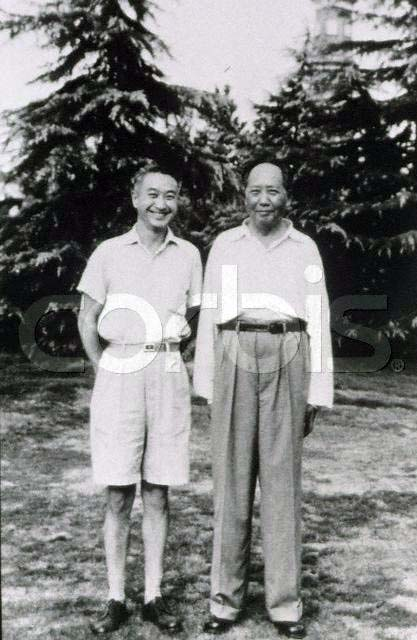

年轻时的李志绥
李志绥和毛泽东合影
毛泽东的生理与心理，和他的绝对权力形成互动的影响，并由此波及
他的国家和世界。本书以全球第一手资料，披露毛的政治与权谋，性与死
亡。
原著：李志绥
英译：戴鸿超教授
助编：石文安(AnneF.Thurston)
前言：黎安友教授(Prof.AndrewJ.Nathan) 中译：李志绥
中文版助编：廖书珊
作者简介：李志绥医生，一九一九年生於北京。他的家庭属於世代相
袭的医生世家。李医生的大曾祖父是满清同光年间的御医。一九四五年李
医生获得医学博士。一九五零年以後成为中共核心内医疗机构的主持人，
并自一九五四年起被任命为毛泽东的私人医生，直至一九七六年毛去世为
止。一九八零年後李医生被任命为中华医学会、中国老年学会副会长，并
主编《中华医学杂志》及《美国医学杂志》中文版。一九八八年移居美国，
与他的两个儿子及儿媳住在一起。
本书不是毛泽东的传略。这只不过是著者作为毛泽东的医生二十二年
间的个人经历。谨以此献给亡故的爱妻——吴慎娴。在这些年中，她与我
共历患难，鼓励并支持我，使我得以度过那些恐惧忧抑的日子，并最後完
成这本书的写作。
前言
黎安友教授(哥伦比亚大学)
像毛泽东这样长期统治众多子民，并带给他的国家巨大浩劫的领袖，
在历史上可谓绝无仅有。驾御的欲望和害怕背叛的恐惧，驱使毛持续陷其
宫廷和子民於动荡之中。他的理想和权谋，驱使中国迈向大跃进及其可怕
後果，即夺去千万生灵的大饥荒和文化大革命。
在这本由曾任毛二十二年专任医生的作者所著的回忆录中，毛也是第
一个如此被近身观察的专制暴君。索多留(Seutonius)所著的《十二凯撒生
活录》，历历描绘了提比略、卡利古拉及尼禄的绝对权力令人悚惧的表现：
声色犬马、贪婪、虐待狂、乱伦、酷刑和杀人如麻。但作者本人并不认识
这些君主。普罗科匹厄斯(Procopius)在《秘史》一书中，无情地挞伐罗马
皇帝查士丁尼和其後提奥多拉，却缺乏对主人翁的真正了解。施佩尔
(AlbertSpeer)熟识希特勒，但他俩的共同兴趣局限在公务和战争。史达林
的女儿很少和她父亲见面。拿破仑和希特勒的私人医生的日记仅为临床资
料。
莫兰(Moran)的《邱吉尔传》和荷顿(Herndon)的《林肯》这类关於伟
大民主领袖的私人回忆录，在历史方面的着墨，并不多於暴君的传记，这
是因为民主领袖较无将其个性强加於历史事件上的伸展空间。而中国传统
中，每个朝代的“起居注”也只记载了每位帝王在仪式、异兆、结盟、封
地采邑上所扮演的角色，甚少揭露黄袍下的个人。即使是在《三国演义》
此类中国历史人物的虚构小说中，处理的也是人物类型而非个性。
相对之下，李志绥医生的这本回忆录显得格外独特：既提供第一手观
察记录，又呈现知人论事的洞见。
现今在中国境内流通的官方回忆录和毛的肖像，皆一成不变地呈现出
一位英明爱民的帝王。真相却迥然大异。毛在初次会晤的场合中，散发着
魅力、同情心，又不摆架子，使他的访客轻松而畅所欲言。但他擅长操纵
自身的情绪起伏，巧妙运用愤怒和轻蔑来控制随身人员，达到骇人的效果。
他依仗着身边臣子不愿犯上的儒家谦卑，来羞辱其属下和敌手。他作势自
我批评，旁人便群起大加奉承。他在周遭创造了一种卑恭屈膝的文化。
毛效仿唐太宗，挖掘人们的弱点，使他们誓死效忠。李志绥医生出身
於富裕家庭，在上海的美国人学校接受医学教育，早期曾和国民党略有牵
连。这些潜在的危险因素使他完全受控於毛。毛深知其警卫行径腐败，但
他需要这些人替他出面办事。
毛爱说，水至清而无鱼。他能毫无惧色地在浊流中浮游，或在黑夜中
行过泥地。
无论出身，毛的追随者永远如履薄冰。毛的老同志被流放内地，有些
因而死去，虽然毛未必直接一手促成这些悲剧。我们在书中一景看见毛隐
身坐在幕後，他两位最亲密的战友正在群众大会上接受攻讦。毛控制高级
领导的医疗保健，拒绝准许一些人接受癌症治疗，因为他认为手术会耗尽
他们余生的工作精力。他对爱人、子女及老友的痛苦，无动於衷。他也无
视於为其政治和经济计划所陪上的抽象人命数字。他了解痛苦只为了控制
其臣子。在政治和私人生活中，他对臣子呼之即去，招之即来——如果他
们还活着的话。
李医生常瞧见毛手上捧着中国史书。毛爱读传统故事中的权术倾轧和
欺骗伎俩，他更是熟谙伺机而动，声东击西，迂回攻退之法。他善用“引
蛇出洞”法，鼓励旁人表明立场再突而擒之。即使是他最亲密的盟友也分
不清他是站在同一立场，还是正伺机反噬。毛带着如此温煦的微笑，判其
侍从流放，而那位受害者竟一路鞠躬谢恩离去。
帝王权势让帝王享有最大的奢侈——生活简单。毛大部分的时间要不
在床上，要不在私人游泳池旁休憩。他吃油腻食物，以茶漱口，和女子寻
欢作乐。毛一九五八年出巡河南时，随车带着一卡车的西瓜。毛喜欢穿布
制的鞋；如果迫於外交礼数得穿皮鞋，他命人先把鞋子穿合脚。他不洗澡，
偏爱用热毛巾擦身，使得李医生难以遏止滴虫病在毛的女友间蔓延。他睡
特制的木床，由专列一路运载到各招待所，甚至空运至莫斯科。
他统治时间和岁月。内宫随着毛的节奏运转，日出而息，日落而出。
国家领导同志随其行踪落脚，四处开会。他希翼以道家御女房术来战胜死
亡。除了五一劳动节、国庆节、和偶尔接见外宾之外，他不遵循任何日程
表——只有在这类重要场合，毛穿戴整齐，并用镇定剂控制焦虑。
女人象上菜般轮番贡入。在以毛之名推行禁欲主义的同时，毛的性生
活成为内宫的中心事务。人民大会堂特别辟出一个厅，让毛在高级领导会
议中寻欢休憩。捍卫全国道德操守的党军政治处，号召大批无产阶级背景，
可靠而又美丽的年轻女孩；表面上是为了在舞厅中和领袖翩翩起舞，其实
是献做他的床伴。有些女孩倍感荣耀，引介其亲姊妹共沾雨露。
每位省党委书记都为毛兴建一座招待所。他行踪不定部份是出於安全
上的顾虑，部份是被迫害妄想狂的驱使。他曾跟李医生说：“在一个地方
待久了不好”。他专列行驶之处，交通管制，车站封闭。公安打扮成小贩，
好给毛一切如常的感受。大跃进时期，农民被动员到火车沿线耕作挤插的
稻田，演出大丰收的荒谬剧，但事实上那场秋收是个灾难。毛最喜爱的住
所是珠江上的小岛招待所，在广州喧扰的市嚣中，他能独享一片天地。北
京劳改农场中特别栽种的食品空运至此，并有试尝员先试吃。警卫用冰桶
为他的房间降温。
绝对权力影响毛的心理、生理健康，以及人际关系，并透过这些波及
他的国家和世界。他蛰居床头数月，抑郁寡欢。一旦政治斗争有利於他，
立即转为精力充沛，无法成眠，以至於李医生不得不加大安眠药药量。政
治压力不是使他阳萎，便是使他纵情声色犬马。在千万人饿死的大跃进期
间，毛虽暂时放弃吃肉，却需要更多女人的慰藉。一位年轻女孩曾对李医
生说：“主席真伟大，样样都伟大，真使人陶醉。”
专制政治与专制者的个性息息相关。毛建立了一个特异的政权——他
努力整合政治社会整体制度，以求从一个贫穷、落後和百般凋零的国家中，
创造出一种前所未有的社会主义。
面对西方的敌意，毛转而与莫斯科结盟。但他对西方的欣赏是他选择
受美国训练的李医生的原因之一，也是他俩无数次彻夜长谈的话题。毛告
诉李医生，美国对中国的企图一向具有正面意义。毛则对苏联友邦，深怀
轻蔑心理。毛立志要以中国式的社会主义超越原始苏联模式，并将中国提
升到先进西方国家水准。这项成就将使他跨入马列主义创始先驱的殿堂。
大跃进即是毛试图创造出比北方邻国更优秀的社会主义模式的努力，而文
化大革命则是在面临此次失败之下，顽固的试验。
在一个拥有众多贫穷人口，幅员辽阔的大陆国家，毛运用群众力量来
追求经济成长，尝试以意识形态的狂热取代物质生活。他将人民生活冻结
在最基本的需求，以此建立一个庞大、虚耗财源的工业结构。因此，毛无
视於那些与理想相左的现实。
尽管他是农民子弟，他仍相信大跃进初期所见的那一片片匪夷所思的
稻田。就如李医生所言，毛为何要怀疑共产主义天堂是否真正来临——因
为他自己就身处其中？毛认为他从中国史书中可学到的领导权术远多於现
代工程教本。等到後院炼钢运动为害匪浅之後，毛才费神了解钢铁的制造
过程。饿殍遍野之际，他幻想人民的稻谷多得吃不完。
毛思想推崇自我否定，以政治操守界定人性价值，并羞辱阶级敌人。
一个由工作组，阶级标签、户口管理和群众运动组合而成的体制，将每位
公民囚禁在组织的樊笼中。没有任何极权制度能将人类彼此相残的政治恐
怖发挥到此极致。这个官僚体制渗透入经济、政治、意识形态、文化、人
民私生活，甚至许多人的思想层面。此机制更领导人民颂扬这个对他们予
取予求的政权。在党机器无法充分迎合毛之幻想的步伐和努力时，他不惜
动摇其根本，大举清算批斗。等群众陷入派系暴力，才又将之重建统合。
最高领导阶层中，由三十到四十人共同拟定重大决策。他们的个人权
力极不稳定，完全仰赖与毛的关系。李医生栩栩描绘了那些服务领导同志
的中央办公厅体系、政治及机要秘书、警卫、厨房、停车间和门诊部的众
生百态。领导人可经北京的地下工程秘密穿梭於中南海和市内其他建筑物
之间。毛的贴身家臣曾在其居所装设窃听设备，无非是想保有更完全的决
策记录，东窗事发後，他们因监视毛而被撤职。
权力结构在服务和保护领导的同时，也孤立他们，毛尤为甚。毛的战
友逐渐将中南海内游泳池、舞会和北戴河海滨退让於毛。毛不顾警卫反对，
执意在三江游泳的壮举，象征他与官僚体制的孤独奋斗，对革命走向末路
的恐惧，以及对战友背叛其狂热信念的疑惧。
一九五六年八大会议中，毛的同袍籍苏联反斯大林运动之势，将毛泽
东思想排除於党章之外，促使党内反对个人崇拜，并批评毛大力催生共产
主义的努力。毛向李医生谎称这些政策未曾经其首肯。国外势力亦威胁毛
的统治。新苏联领袖赫鲁晓夫希求於西方和解。李医生描写了毛、赫两人
在游泳池旁不欢的会晤。这次秘密会晤揭示中苏公开决裂与中国长期孤立
的开端。
毛掌握三种权力工具：意识形态、军队、及其在党派系网络中的枢纽
地位。毛主席走遍全国的巡回运动吹起大跃进的号角，一时上至经济计划
领导，下至基层干部，纷纷群起响应。一九五九年庐山会议，其他领导人
试图钳制毛的脚步，毛即恫吓要上山另组红军。其他领导人只好俯首听命。
大饥荒开始後，毛退居权力二线。其他领导恢复经济的同时，他斥责
彼等为“行尸走肉”，并私下抱怨他们不再征询他的意见。但他按兵不动，
直到京剧论战时才一一将以诱陷，同时用农村腐败问题，使敌手晕头转向。
他待一切布置妥当，便发动文化大革命。
一九六九年，於百万人牺牲之後，毛在九大会议中赢得全面胜利。彼
时他的政敌不是已被凌虐至死，便是放逐内地，全国在他无所不在的肖像
前歌功颂德，挥舞着小红书。他身侧站着另有所图的林彪——旧统治团体
中唯一的幸免者。毛发展的理想失败了。但在这个他所毁灭的国家中，他
握有绝对权力。两年後林彪政变使毛深受打击，李医生相信它加速了毛的
死亡。毛用余生精力推动开往西方的大门，为往後邓小平的改革铺路。
病态心理在宫廷政治中蓬勃迷漫。毛的控制越彻底，他越恐惧他人的
钳制。手下争相邀宠反而使毛更觉疑云重重。毛认为招待所被下了毒，他
因听到野兽在屋顶的游走声响而惊吓万分。毛透过党组织来操纵其他领导，
监视他的同袍。他的政敌全被他的手下包围，难怪他永远无法确定，对方
是否也透过女人来侦伺他。
毛夫人江青也深为精神衰弱所苦，她怕声音、光、冷、热，并且总是
无法自制地与人争吵。生活无聊，依赖，和被迫无所事事，在在使她极度
沮丧。因此毛在拈花惹草之际，总试图避其耳目。但当毛需要她做为政治
上的代理人时，他便领她进入内宫政圈。江青跟同样病奄奄的林彪一样，
握权後立即生气百倍，并与毛最宠爱的女友友善，期能更接近权力的源头。
李医生呈现了下列场景：林彪在其夫人怀中，为肾结石的病痛呜咽不
已；华国锋在大厅中静坐数小时未能见毛，只因毛当时的看门人张玉凤正
在午睡；周恩来跪在毛脚跟旁指示吉普车游行的路线；病重的毛将全国大
权交给周恩来，只为及早康复和活得比周长久，以及江青对此的愤怒等。
在所有毛的追随者中，只有周恩来与内宫诡秘繁琐的脉络保持某种程
度的距离。
反讽的是，李医生和他的同事由此认为周为不守信义的危险人物。周
按领导阶级向上汇报之举，令其他家臣疑心大起，视其为软弱无能。
最後，全中国最受爱戴的人众叛亲离。在毛长期病情恶化期间，家臣
念兹在兹的主要念头是避免因他的去世而惹祸上身。只有他的女友张玉凤
仍待他如常人，争吵不休，旁人指责她会气死毛时，她也悍然无惧。毛越
形衰弱後，她成为不可或缺的一份子，只因为只有她才能解读毛含糊不清
的语言。
李医生那张坦荡而带着微笑的圆脸，在毛众多家臣的团体照中，特别
突出。他率直的表情、柔和的笑容，和整洁的打扮，在在都掩不住他所受
的西方训练。李医生的外国气质和西方仪态。似乎既说明了他的才干，又
说明了他的弱点，因此使他显得特别不可多得。李医生的不安全，恰可保
证毛的安全，两者息息相关。於是他在毛的保护羽翼之下生存，埋首於医
药事物——即维持那位一举一动便足以陪上百万人性命的人的健康。
对邪恶能有某种程度视而不见的人，才能成为暴君生命的守护天使。
李医生身为历史旁观者的局限是其工作的要求之一。但有时政治不免压顶
而来。毛时常坚持讨论时事，或派遣李医生离开内宫，四出观察，提出报
告。陷於内宫中，李医生不得不区分敌友。除了毛主席外，他的保护者是
中央警卫局长汪东兴。李汪的联盟使此书有若干偏颇，但同时也提供了了
解宫廷政治的许多洞见。
自李医生离开中国後，他便几乎完全被官方历史抹消。中国出版界发
行的大量描述毛个人生活的书籍中，只有一、二本提及他。很明显地，中
央曾下达指令——李仿佛未曾存在过。但他的身影牢牢嵌在无法修改的纪
录影片和照片中，而某些可靠来源也确定他的身份。比照官方和半官方的
著作，可证实他书中的许多细节，但不同於此书的是，它们都大笔略掉会
使这仍仰仗毛的光明形象来行使统治的政权感到难堪的那些层面。没有任
何一本官方传记呈现了一幅比李医生此书更真实的毛画像。此书是有关毛
——或许也是有关历史上任何一位专制者——的著作中，最深刻入微的一
本。
毛去世五年後，也就是一九八一年，中国共产党中央委员会为毛盖棺
论定，发表一篇官方的《关於建国以来党的若干历史问题的决议》。文中
结论毛是伟大的革命家，功大於过，瑕不掩瑜。此书给我们另一种教训。
它描述过度膨胀的权力，如何驱策其拥有者进入一种黑暗的深渊：在深渊
中，伟大的梦想只能导致滔天罪行。
一九六零年中国青年杂志社通过毛泽东的秘书田家英，向我征求稿件。
田在中南海南楼的宿舍，和我贴邻。他平时知道我喜欢作点杂记，其
中个别篇章，他还看过，这是他劝我选一、二篇刊登出去。
自从一九五四年，我被任命为毛泽东的保健医生以後，空下来我将平
日的所见所闻记录下来，一者为了消磨时间，二者有时拿出来翻翻，作为
流逝的年华的纪念，完全没有想发表的意思。因此，我拒绝了《中国青年》
杂志的征稿要求。
开始只是记录一些趣闻趣事。时间一久，成为习惯，於是写成无所不
容的日记了。到一九六六年时，已经积累了四十几本。
一九六六年下半年，红卫兵兴起了抄家风。这时我已迁到弓弦胡同中
央保健局宿舍。前後院住了三位卫生部副部长。我自己住在中南海内，很
少回家。可是一回来，娴就同我说，几乎天天晚上，来人抄这三位副部长
的家。时常敲错门，敲打我家。娴很害怕，万一抄错了，进来将这四十几
本杂记抄走，岂不是有了十恶不赦的罪状了，应该赶紧烧掉。
我抱着这四十几本杂记发愁，不敢在家里烧，怕邻居怀疑而揭发，又
没有地方可藏。於是我将这些杂记带到中南海内一组，即毛泽东的住地。
靠南墙的小院内，有一个焚化炉，是为了毛泽东和江青不需保存的文件、
信件，加以销毁之用。我就用这个炉子焚烧。烧到还剩下十多本的时候，
汪东兴打电话叫我到他那里。他问我，现在正是抄家的时候，江青的厨师
告发我，在一组烧毁文件。我告诉汪，我烧的不是文件，是我的笔记。汪
说，笔记有什么要紧，何必烧。我说，这些笔记都同毛有关系，留下怕惹
祸。汪说，你一烧更惹祸，这个厨子如果告诉了江青，就完了。
我回到一组，看到剩下的十几本日记，心想这些留下来是祸害，反正
已经烧了，再烧一次吧。
第二天汪东兴又将我叫去。这回他急了，对我嚷！“叫你不要烧，你
还烧。主席的厨子来告你的状了。这事要闹出去，就成了大问题。你再不
听话，我把你关起来”。
我向汪说，已经烧完了，再也没有可以烧的了。
这就是我积累了十几年下来的日记的下场。
文化大革命中间，我一天到晚提心吊胆，片纸支字都没有保存下来。
一九七六年四人帮被捕以後，娴常常惋惜地说：“太可惜了，那四十
几本日记。如果能保存起来，也没有事。天下本无事，庸人自扰之。”为
此她常常催促我，写出这一段的经历。
一九七七年夏，叶剑英到三零五医院检查身体。检查间隙，叶同我谈
到往事。他说：“你给毛主席工作了二十二年，时间可不短了。你应该将
你知道的事，写了出来，这也是历史啊”。他并且说，他要向一些报刊代
为宣传。
此後多种报刊杂志都找到我，要我投稿。他们愿意优先刊登。但是我
不愿投稿。
因为经过这么多年的观察，凡是讲真心话的文章，作者不是被封为右
派，即冠以反动文人的称号，没有一个可以幸免。我又不想写歌功颂德，
粉饰太平的文章。
但是我又不愿意让我的这些年的经历，烟没无存，於是我重新拾起旧
忆，撰写回忆录。从一九七七年开始执笔，断断续续，又写了二十多本。
我并没有想整理发表，因为根本没有公开发表的可能性，何况我不想因之
取祸。这只不过作为我和娴逝去年华的雪泥鸿爪，留作纪念吧。
一九八八年二月，娴发现患有慢性肾功能衰竭。五月住院，到七月下
旬，病势日趋严重。两个孩子、两个儿媳，都十分焦急。他们一再催促我
携娴来美国求医。
八月中旬我与娴带着孙女到了美国。娴继续求治。我每天要照管娴的
饮食和治疗，虽然娴多次提到，将旧作整理出来，但是我哪里有这种心境
和时间呢？
十二月中旬，娴因感冒，病势急转直下，送入医院，住院治疗。经过
多方抢救，终於因为肾功能衰竭，一九八九年一月十二日去世。她陷入昏
迷前，还一再叮嘱我，要将一九四九年以来，这三十九年中的遭遇写出来。
她说：“一定写出来，为了你，为了我，也为了我们的後代。可惜我不能
再帮助你了”。
一九八九年三月，我点检行箧，取出了旧记和带来的全部资料，开始
了写作生活。这一方面是对娴的永久的纪念。另一方面，身在美国，就可
以将这些年的所见所闻，秉笔直书，无需避讳，加以发表。
如果读过这本书以後，读者能够更加珍惜自己的理想和所向往的幸福
的生活，那将是我和娴多年来的最大愿望。
经过了二十二年的血腥战争，一九四九年中国共产党终於取代国民党，
统治了中国大陆，建立了中华人民共和国。
当年夏天，我正在澳大利亚。由我大哥的从中介绍，中国共产党中央
军事委员会卫生部副部长傅连璋来信，希望我回去工作。於是我返回香港，
同我的妻子娴一道回到北平。
傅安排我到了中共中央办公厅行政处香山门诊部，後迁入中南海，成
立中南海门诊部。
我工作勤奋，受到中共中央一些高级干部和一般工作人员的赞誉，被
选为中共中央办公厅和中共中央直属机关的甲等工作模范，吸收入党，并
被任命为中南海门诊部主任，後为中南海保健办公室主任、中央卫生部医
学科学委员会副秘书长及中共中央办公厅警卫局三零五医院院长。
一九五四年，经警卫局局长汪东兴推荐，通过中共中央办公厅主任杨
尚昆和中央公安部部长罗瑞卿同意，由周恩来批准，我被任命为毛泽东的
保健医生，以後并兼任毛的医疗组组长。从此，直到一九七六年毛去世为
止，我作为毛的专职健康保护人和监护人，无论在北京或去外地，都跟随
在他身边，为时二十二年。
我初次到毛处工作，即惊异於他的生活习惯与众不同：饮食睡眠都没
有一定的时间，正是“起居无时，饮食无常”。对他说来，一天二十四小
时之分，画夜之分，毫无意义。他的一切公私活动，甚至接见外国元首，
都以他的意愿为主，都不事先通知，而采取突然行动。即使在身边工作的
人员，也摸不清他下一个行动是什么。
加上共产党内部控制严密，强化保密制度，毛本人亲自规定：“不要
说这里的情况”，所以他的真实状况，从政治活动到私人生活，都笼罩在
一层迷雾之中，更形增加了他的神化感和权威感。
一九五九年以前，我崇拜他，仰望他如泰山北斗。但是我虽在他身边，
在他的周围似乎有一道神秘而不可逾越的障隔，使我不能真正进入他的生
活。
一九五九年以後，我逐渐穿过这层密障，进入了他的生活实际。原来
他正如演员一样，除去前台的经过种种化装的他以外，还有一个後台的真
实的他在。
五十年代初期，人们只看到他与苏联订立了“中苏友好互助同盟条约”，
号召“一边倒”，但不知早在三十年代，他就被苏联共产党和史达林目为
“异端分子”，是“白心的红皮萝卜”。一九四九年冬他去苏联，受到极
大的冷淡待遇，住了两个月，在他最後愤然要回国时，史达林才见了他，
签了这个条约。他认为苏联是中国的最大威胁，最终目的是吞并中国。只
是到六十年代初，中苏关系的破裂才公开化。
自从斯诺等人访问陕北中国共产党的根据地，向全世界介绍了中国共
产党的生存奇迹以来，他对美国，特别美国人，有很大好感。当他号召“学
习苏联”，大家学俄语的时候，他不学俄文，而学英文。他自嘲说：“我
是言行不符”。他身边所用的知识分子，包括我在内，都是受英美教育出
来的人。他决不将由苏联培养出来的人放在身边。至於韩战及越战是由许
多因素，也包括美国一些不了解毛的内心世界和对当时中国共产党有歧见
的人士造成的历史大不幸。从六十年代末期，毛即致力於恢复中美友好关
系，而这一历史使命的完成，是他去世前实现的。
毛对蒋介石，虽然终生为敌，但并不持完全否定的态度。他认为蒋有
强烈的民族自尊心，不俯首贴耳听命於美国。他说：“蒋介石和我都主张
只有一个中国，在这点上我们志同道合。”
共产党核心领导中的斗争，既复杂又曲折。自一九五七年的所谓“反
右派斗争”，一九五九年庐山会议批斗彭德怀(当时的中共中央政治局委员、
国防部长)，演变到一九六六年开始的文化大革命，在表面上有着这样或那
样的原因，但实际上却存在一个根本因素。一九五六年苏联共产党二十次
代表大会上有“反史达林”，“反对个人崇拜”的运动，在中国共产党内
引起一连串反应。毛从种种迹象感到，他作为全党的最高领导地位受到动
摇，因而作出一系列相应的反应。正如中央警卫局局长汪东兴所说：“毛
认为，全党没有谁都可以，可是不能没有他。”
毛的私生活骇人听闻。外表上，他凝重端庄，而又和蔼可亲，俨然是
一位忠厚长者。但是他一贯将女人作为玩物；特别到晚年，过的是糜烂透
顶的生活。他没有别的娱乐，玩弄女人成了他唯一的乐趣。汪东兴说：“他
是不是觉得要死了，所以要大捞一把。要不然怎么会有这么大的兴趣，这
么大的劲？”江青说过：“在政治上，无论苏联和中国党的领导人，没有
哪一个能斗过他(毛泽东)的纵横捭阖的手段。在生活问题上，也没有谁能
斗得过他，管得住他。”
我不是给毛写传记，只不过作为毛的保健医生，在二十二年的风风雨
雨中，将我的亲身经历，及所见所闻，笔之於书，用以纪念与我患难与共
的爱妻娴，没有她生前对我的支持和一再鼓励，我不会写成这本书。
时间间隔太久，又没有读些参考文献，疏漏之处在所难免，盼读者方
家斧正。
致谢
著者在此特向廖书珊小姐致谢，她在本书的中译过程中，无论协译、
剪裁、补译、贯串、拼贴、校对，都付出极大的精力和时间。感谢夏元瑜
教授赠一中南海示意图，使本书生色不少。
本书中每章後的注释为英文版助编石文安女士所注；中共中央组织结
构图、中共中央办公厅组织结构图、人物简介及年表，亦均为英文版编者
绘制，在此一并致谢。
“主席，你叫我？”
毛泽东尽力抬起眼睛，嘴唇嗫嗫地动着。呼吸机的面罩放在他的口鼻
旁。毛在吃力地喘息着。我俯下头，但除了“啊，啊……”外，听不清他
说些什么。毛的头脑仍然很清醒，但声调中已失去希望。
我是毛泽东的专职医生，也是他的医疗组组长。自从一九七六年六月
二十六日，大厅内的心电监护器显示心肌梗死之后，两个多月以来，我们
二十四小时照顾他。
护士人手原本不足，从医院又调来一批，每班三个人，另有两名医生
做心电图监护。我昼夜二十四小时待命，一个晚上只断断续续睡上三、四
个小时左右。我的床榻就在毛的病房一个桌子下面。
毛泽东已成不死之躯体。对成千上亿的中国人来说，毛不是凡人，甚
至不是帝王，他是个神祗。将近二十年来，“毛主席万岁”的口号已与日
常生活紧密地连接在一起。对许多中国人来说，这已俨然成为事实。全国
各地的街道、工厂、学校、医院、餐厅、戏院和家庭中，充斥着毛的肖像
--还有这句口号。甚至那些怀疑毛不朽的人，也相信毛会活得较一般人长
久。
一九六六年五月，文化大革命的前夕，当时即将被选为毛的接班人的
军事委员会副主席林彪声称，毛一定可以活到一百或一百五十岁。谁敢暗
示毛是凡人，就得冒着被打成“反革命”的险。
中国人民此时仍被蒙在鼓里，不知道毛病倒了。他们只能从毛与国外
显贵会晤的几张应景照片中，略窥毛衰老的情况。毛的最后一张照片，是
在一九七六年五月与寮国领袖凯山的合照。虽然那张照片显示他们的领袖
已垂垂老矣，新闻媒体仍坚称毛红光满面、神采奕奕。直到一九七六年九
月八日早晨，数以亿计的中国人民仍高喊着“毛主席万岁”。
但在那天晚上，我们这些随时在毛身边的人心里都很清楚，毛的死期
近了。
中国共产党中央委员会的两名副主席华国锋和王洪文，中共中央政治
局的两名委员张春桥和汪东兴，这四个人自从六月二十六日毛发生第二次
心肌梗死以后，也一直分成二组；轮流昼夜值班。
负责拯救主席生命的华国锋对毛忠心耿耿；他诚挚地关心毛的健康和
舒适，试着了解医生的解释，并相信医疗组已竭尽所能。我们建议从毛的
鼻孔插胃管入胃饲食时，只有华国锋愿意先亲身试试这种新医疗方法。我
喜欢华国锋。他的正直和诚恳，在腐败的党领导阶层中十分罕见。
我是在一九五九年大跃进时期，陪毛去巡行湖南的韶山老家时，认识
华国锋的。
华国锋当时是韶山所属的湘潭地区党委书记，毛非常欣赏他。两年后，
在大跃进使全国经济衰退之际，许多地方领导仍在谎报粮食产量节节高升，
只有华国锋有勇气直言。他说：“经历了大跃进和人民公社一折腾，人瘦
了，地瘦了，牛也瘦了。在三瘦之下，再讲什么高产粮食，是不可能的。”
毛对我说：“他的话，我看是大实话。”
华在一九七六年四月被任命为中央委员会副主席。这是毛死前权力斗
争的一大胜利。在此之前，毛已指派华出任国务院代总理，接替才去世的
周恩来，主持中央日常工作。到了四月上旬，数以万计的民众在天安门广
场哀悼周恩来，并抗议造反派江青、张春桥、姚文元、王洪文四人帮。这
个游行被打成“反革命暴动”。毛为了安抚造反派，以煽动不安罪名整肃
邓小平。毛为了搞调和，不选造反派，而选华做为中共中央第一副主席。
华国锋因此成为毛确认的接班人，得以主持中央政府和掌理日常党务，造
反派转而指控华右倾。
华决定他无法再等下去。一九七六年四月三十日他告诉毛主席造反派
的攻击危及他的地位时，我也在中南海。会后华与我透露他们的谈话内容，
并把毛写的字条给我看。毛蜷曲的字体写着：“你办事，我放心”、“照
过去方针办”、“慢慢来，不要着急”。那时毛已口齿不清，他发现用笔
比较容易沟通。华国锋将纸条拿给政治局看，毛的纸条是他接班合法化的
唯一文件。
一九七六年九月九日午夜零点，毛泽东的呼吸越来越微弱。为了急救，
刚刚给毛从静脉的输液管道内注入了升脉散，血压由已降到了 86/66 毫米
汞柱升至 104/72 毫米汞柱，心跳也稍微增强了一些。华国锋殷切的眼睛望
着我，他低声急促地问我：“李院长，还有没有别的办法了？”王洪文、
张春桥和汪东兴都凑了过来。
我沉默地凝望着华国锋。室内除了呼吸机的嘶嘶声以外，空气好象凝
结了。我小声说：“我们已经用尽了各种方法……”大家又沉默下来。
华低下头沉思了一下，然后对汪东兴说：“立刻通知江青同志和在北
京的政治局委员。也要通知外地的政治局委员，要他们即刻来北京。”汪
起身出去时，内室中的一位值班护士跑过来，匆匆对我说：“李院长，张
玉凤说毛主席在叫您。”我绕过屏风，走到毛的床边。
张玉凤是毛十四年最亲近的的随员。张玉凤曾为毛出巡全国时私人专
列上的服务员，现在则是他的机要秘书。张玉凤与毛初次相遇於毛在长沙
举办的晚会上。那是一九六二年冬，她那时年方十八，天真无邪，有着大
大圆圆的眼睛和白皙的皮肤，她主动请主席跳舞。就在那次晚会上，毛与
张连续跳了几场舞，等到舞会结束，我亲眼看见了毛携了张玉凤的手回到
他的住室。
毛与张的关系十分亲密，毛也有其他几位女友。现在仍有两位原空军
政治部文工团的孟锦云和李玲诗在做毛的护士，替他擦身和喂食。但张玉
凤待在毛身边最久。
虽然在岁月催折下，她也开始饮酒，但她一直深受毛的信任。一九七
四年，毛的机要秘书徐业夫因肺癌住院，张便接管毛每日批阅公文的收发。
在毛视力衰退以后，她便负责将那些公文读给毛泽东听。张於同年年底由
汪东兴正式任命为毛的机要秘书。
我是毛的私人医生，给毛检查身体时，还可以见到毛，谈几句。别的
任何人，要见到毛，首先要经过张玉凤的同意。一九七六年六月中旬，华
国锋到游泳池来，要向毛报告工作。叫张玉凤三次，张睡觉不起，另外两
个值班的是孟锦云和李玲诗，不敢向毛说华要谈工作。她们说，不经过张，
直接同毛讲了，就不得了。华等了两个多小时，张仍然不起床，华只好走
了。孟锦云告诉我，一九七六年初“批邓整风”后，邓的女儿给毛写了一
封信，说批邓以后，撤走了工作人员，邓有病，她要求自己留下，照顾父
母。这封信是否交给了毛，很值得怀疑。因为结果邓的女儿仍没能够去照
顾她父亲。
张玉凤能爬到这个位子，完全是因为只有她听得懂毛的话。连我都要
透过她翻译。
张玉凤对我说：“李院长，主席问您还有救吗？”
毛用力点点头，同时慢慢伸出右手抓住我的手。我握住他枯槁的手，
桡动脉的搏动很弱，几乎触摸不到。两侧面颊深陷，早已失去了他以往丰
满的面容。两眼暗淡无神，面色灰青。心电图示波器显示的心电波，波幅
低而不规律。
我们六周前将毛从中南海游泳池搬到代号为“二零二”这座大厦内的
一个房间。
一九七六年七月二十八日北京附近发生了强烈地震。北京东北一百里
外的唐山市全被摧毁。二十五万余人当场死亡。北京市虽没什么伤亡，但
房屋倒塌多处。数以百万的市民唯恐再发生一次强烈余震，在街上搭的防
震棚住了好几个礼拜。自文化大革命初期，毛便住进了中南海的室内游泳
池。他的病床就在室内游泳池内一个房间里。地震时游泳池也受到强烈震
摇。我们决定将他迁往更安全的地方。
二零二似乎是唯一的选择。一九七四年游泳池以南的旧平房被拆掉，
盖了一座抗地震的大厦，旁边又修了随从人员的住房。大厦有走廊连接游
泳池。这座大厦就称为“二零二”。唐山大地震当天傍晚下了大雨，又有
一次地震。在二零二这栋屋内，几乎没有任何感觉，其实那时即使山崩地
裂我都不会有什么感觉。我全心全意在救助毛泽东奄奄一息的生命。
华国锋、张春桥、王洪文和汪东兴此时静静地走到毛床前。我听见另
一批人从屏风后面悄悄进房的声音。房里都是人，大家正准备换班。
我站在那，握着毛的手，感觉他微弱的脉搏时，江青从她居住的春藕
斋赶到。她一进门就大声嚷道：“你们谁来报告情况？”
如果将毛十四岁时，他父母替他安排，他却拒绝圆房的那椿婚姻也算
在内，江青是毛的第四任妻子。毛於一九三八年不顾共产党政治局的激烈
反对，与江青在延安结婚。传说江青在延安时期对人温和有礼。但在一九
四九年后，这位国家最高领导人的妻子，却因无法掌握实权而对人生厌烦，
并变得不可理喻，难以伺候。直到文化大革命后第九次党代表大会上被选
为政治局委员，才得以运用她的权势刺激消除旧隙。毛和江青长年来各过
各的生活，但毛并不想和她离婚。毛恢复自由之身后大可以和别人结婚，
但他不愿意这样做。文化大革命爆发后，江青搬去钓鱼台国宾馆。直到毛
六月发生第二次心肌梗死，江青才搬回中南海的春藕斋旁新建的一所华丽
的大房子。
华国锋摇摇手说：“江青同志，主席正在同李院长讲话。”
虽然我心里清楚毛毫无希望，我仍试图安慰他。这几年来他的健康情
形每下愈况。在一九七一年九月后不久，当时身为党副主席、军事委员会
副主席、毛钦定接班人，全中国公认为毛最亲密的战友林彪背叛毛，并策
划暗杀他。林彪在他的计划暴露之后，与他夫人叶群和儿子林立果一起搭
机准备潜逃到苏联。飞机因燃料用尽，在外蒙古的温都尔汗坠毁，机上人
员全部死亡。林彪事件后，毛更形沮丧，无精打采，且持续失眠，最后他
终於病倒了。
在美国总统尼克森一九七二年二月第一次来中国访问的几个礼拜前，
毛仍抗拒着医生所给他的任何医疗措施。直到尼克森预定抵达的三个礼拜
前，毛醒悟到如果他的健康状况再不改善，他便无法亲临这场历史性的外
交会晤。他叫我给他治疗。
当时他的病况过於严重，完全恢复是不可能的。经过不断的治疗，肺
部感染得到控制，心脏功能明显好转，水肿在消退，但是直到会见尼克森
的时候，露在衣服外面的颈部和双手水肿还没全消，两足更是明显，原来
的布鞋穿不下去，特地做了一双大鞋，他此时行走仍很困难。我在中南海
室内游泳池门口迎见尼克森总统的座车，领他到毛的书房后，就在接待室
外的走廊上将急救设备准备好，以防万一。也因此我听到了他们的谈话。
现年八十三岁的毛百病缠身，他长年吸烟的习惯毁了他的肺，并有慢
性气管炎、肺炎和气肿发作。他的左肺中有三个大的空泡，所以只能向左
侧倾卧，这样右肺才能充分膨胀吸入足够的空气。他常常只能借助氧气机
器呼吸。在几次急救中，我们使用季辛吉在一九七一年秘密访问中国时送
的美国制呼吸器。
一九七四年的诊断确定，毛的病非西方所猜测的帕金森氏综合症(另称
震颤性麻痹)，而是一种罕见而又无药可救的运动神经元病(另称内侧纵索
硬化症)也就是脑延髓和脊髓内，主宰喉、咽、舌、右手、右腿运动的神经
细胞逐渐变质死亡。在国外文献报告上的统计，这种病如已侵犯到喉、咽、
舌的运动神经细胞，最多只能活两年。因为，喉、舌瘫痪，会引起肺部的
反复感染，不能吞咽，不能正常饮食，势必更形衰弱。必须经鼻道装胃管
饲食。受影响的肌肉组织失去功用，呼吸困难。现今仍未有有效的治疗方
法。
毛的病情如专家所料的恶化。但真正使毛致命的，是他的心脏--那老
迈而被慢性肺炎折磨的心脏。毛在一九七六年五月中旬和张玉凤一次剧烈
争吵中，爆发第一次心肌梗死，六月二十六日则是第二次。第三次发生於
九月二日。医生们全都知道死神就要降临，但没有人敢明言。
毛主席仍在和死神挣扎。
我弯了腰对他说：“主席放心，我们有办法。”这时有一痕红晕在毛
的两颊出现，两眼顿时露出了刹那的喜悦光彩。接着长长地出了一口气，
两眼合下来，右手无力地从我的手中脱落，心电图示波器上呈现的是一条
毫无起伏的平平的横线。我看看腕上的手表，正是九月九日零时十分。
毛的逝世并未使我感到难过。二十二年来我每天都随时在毛的左右，
陪他出席每个会议。出巡任何地方。在那些年里我不只是毛的医生，我还
是他闲聊的对手，我几乎熟知他人生中所有细枝末节。除了汪东兴之外，
我可能是随时在他身边最久的人。
我刚开始崇拜毛，望他如泰山北斗。他是中国的救星，国家的弥赛亚。
但在一九七六年此时，这崇拜早成往日云烟。好多年前，我那个全民平等，
剥削终止的新中国梦想就已破灭。我那时仍是共产党员，但我对它毫无信
心。“一个时代结束了，”当我盯着心电图那条平直的线时，闪过这个念
头。“毛的朝代过去了。”
这念头瞬间即逝，紧接着我心中充满恐惧。我会有什么下场？做为毛
的专任医生，这问题长年在我心中盘旋。
我抬起头，茫然环顾四周。从每一个人的神色举止和语言里，可以清
楚看出他们对於这位叱咤一时的风云人物的死亡，有着多么不同而复杂的
心情。江青转过身，恶狠狠地对我说：“你们这是怎么治的？你们要负责
任。”
江青的指控早在我意料之中。江青在最天真的举动中都能嗅出阴谋。
二十年前我们就处得不好。四年前，也就是一九七二年，她指控我是特务
集团中的一员。
华国锋慢慢走到江的身旁：“我们一直都在这里值班，医疗组的同志
们都尽到职责了。王洪文涨红了脸急忙说：
“我们四个人一直在这里值班。”
王洪文才四十二岁，是政治局里最年轻的委员。他从原本是上海一家
纺织工厂安全干部，窜升到最高政治权力阶层的速度之快，使得外界给他
取了个“火箭式干部”的绰号。没有人知道毛为何喜欢这年轻人，并如此
迅速的提拔他。王长得高大英俊，可他是个金箍马桶，只有中学程度，不
学无术，只会卖弄小聪明。他对中国的领导阶层没有任何贡献。那年五月，
毛的健康重大恶化时，王还建议我给毛服用珍珠粉，但我拒绝了。为此汪
东兴还批评我不尊重党的领导人。毛也从未服用过珍珠粉。
毛垂危病榻时，王原本该负起看守的责任。但他却常跑去国家高层领
导专用的西苑军用机场猎兔子。大部分的时间他都在观看香港进口的电影，
我想王原先就不是有品德的人，权力只是使他越加腐化。
“医疗组的每项工作都报告了我们，我们都清楚，也……”
没等王说完，江青抢着说：“为什么不早通知我？”
但我们早跟江青报告过好几次毛的病情。江青指控我们医生从来将病
情说得严重，是谎报军情。她怒斥我们是资产阶级老爷，还说医生的话最
多只能听三分之一。
八月二十八日，在听过我们对毛病情恶化的正式报告后，她气冲冲赶
往大寨“巡查”。九月五日，华国锋打电话将江青从大寨催回北京。当晚
江来了一下，说太疲劳了，就回了她自己的住处，并没有询问毛的情况。
九月七日，毛已进入垂危状态，江青下午来到二零二，与每一个医生
和护士握手，连声说：“你们应当高兴”。她似乎以为毛死后她会当然接
管权力，我们也会期盼她的领导。
医疗组的人都感觉很奇怪，为什么江青这样对待毛呢？我将这些告诉
了汪东兴。汪说：“这不奇怪。江青认为阻碍她取得最高权力的人，就是
主席。”
这时张春桥背着双手，踱着八字步，两眼看着地上。
一旁的毛远新则脸色铁青，走来走去，似乎在找什么东西。
毛远新是毛泽东二弟泽民的儿子。毛泽民在抗日战争期间被新疆省省
长判处死刑。原本亲苏联和中国共产党的盛世才，曾热烈欢迎毛泽民前往
他的辖区。但在德国入侵苏联之后，他便转而投靠蒋介石和国民党。毛泽
民的夫人也一起被捕，在牢里产下毛远新。他母亲再婚后，毛泽东便负起
养育侄子的责任。毛在一九四九年把毛远新接入中南海，但很少和他见面。
我是看着远新长大的。远新小时和江青处得不好。一九六六年文化大
革命开始时他才二十多岁。他写信给毛为自己与江青不睦的事道歉。现年
只有三十多岁的毛远新是沈阳军区政委。一九七五年尾，毛因病重而不能
出席政治局常委会议，毛远新便代表他出席，成了毛的联络员。江青信任
毛远新。
其他人们和医生护士都低眉垂目，象是等待判决，汪东兴在向张耀词
说些什么。
张耀词当时任中共中央办公厅副主任、警卫局副局长、中央警卫团团
长。汪东兴与江青素有嫌隙。汪当时拥有相当大的权力并身兼数个要职。
他不但是中共中央办公厅主任，还是警卫局局长兼党委书记，以及中央警
卫团党委书记。想发动政治局政变一定得有他的鼎力相助。
突然江青的脸色变得缓和起来。也许她以为阻碍她取得最高权力的障
碍已经消失，她马上就可以统治中国。她转身向我们说：“你们大家辛苦
了，谢谢你们。”然后回头叫她的护士说：“给我准备好的那套黑色衣服
和黑头纱呢？你们烫好，我要换上。”
华国锋向汪东兴说：“你立刻开政治局会。”
大家从室内走到外面的大走廊，这是张玉凤突然放声嚎哭，嘴里叨叨
着：“主席你走了，我可怎么办哪？”江青走过来，用左手抱住张的肩膀，
笑着对张说：“小张，不要哭，不要紧，有我哪，以后我用你。”张立即
停止了嚎哭，满脸笑容对江说：“江青同志，谢谢您。”
我听到江青悄悄对张玉凤说：“从现在起，主席的睡房和休息室，除
你之外，谁也不许进去。你把留下来的所有文件都整理好，清点好，交给
我。”一边说一边向会议室走去，张跟在江的后面说：“好的，江青同志。”
此时张耀词气急败坏从室内走出来，向我说：“李院长，你问问值班
的人和别的人，有没有看见床旁桌子上的那块手表？”
我说：“什么表？”
“就是郭老在重庆谈判时，送给主席的那块手表。”毛没有戴手表的
习惯--他起居无常--那只瑞士亚美加表是多才多艺的文人兼学者郭沫若在
一九四五年送给毛的。郭后来出任中国科学院院长，直到一九七八年去世。
他终生是毛的好友，因此那只表极具历史价值。“我说：“刚才大家都忙
着抢救，谁也没有注意那只表，你问问张玉凤。”张说：“我看见毛远新
走来走去，东摸西摸，一定是他拿了。”我说：“我没有看见，医疗组的
人没有谁有胆量拿。”张又急忙回内室。
汪东兴从会议室那边走过来，叫我到旁边的房间内说：“刚才同华总
理商量过了，你赶快去想办法，要将主席的遗体保存半个月，准备吊唁和
瞻仰遗容。一定要保住，天气太热，不要坏了。”我说：“保存半个月容
易做到。”汪说：“你赶快去办，我还在开会，你回来后立刻告诉我。”
我又走到大走廊，中央警卫团一大队一中队值班的警卫队员都在这里，
一中队的教导员坐在地毯上，他对我说：“李院长，你可要准备好，政治
局开会，好事摊不到你的头上，出了事都是你的责任，你跑不了。”我想，
我跑到哪里去呢？无处可跑。
我早料到了我会被控谋杀毛泽东。
我的大曾祖李德立，是满清同治年间太医院左堂官，四曾祖李德昌是
右堂官。我家相传下来的一段史实，同治皇帝患梅毒，但慈禧太后只准医
生按水痘治，大曾祖曾冒险向慈禧说，不能这样治皇上的病，不是水痘。
慈禧大怒，将头上的钿子掷下，大曾祖立即摘帽磕头到地。慈禧没有杀他，
但摘去顶戴，带罪当差。所以大曾祖死时遗嘱，“不要戴帽入殓，把帽子
放在旁边。”并告诫子孙，不要做御医，怕没有好下场。我家仍旧是以医
药传家，但代代都遵守着我大曾祖所说不要做御医的遗言，往后没有人再
做御医。
我被任为毛的医生后，曾要求上级再考虑。但我无法回绝。我尝试离
职好几次，毛都将我召了回去。
只有我的家人和最亲近的朋友知道我工作的性质。真正了解我工作的
人总觉得我不会有好下场。他们常警告我，做为毛的专任医生，可能会有
悲惨结局。
一九六三年有一次我的堂兄对我说：“你在工作上承担的责任太大，
毛主席的健康可是全党全国人民都极其关心的大事，万一有哪位中央委员
对你的工作不满意，指责你，可就不好办了。”
一九七四年春天，我母亲的干女儿由云南昆明到北京来休假，看到我
说：“你的家我可不敢去，更不敢住。在昆明谭甫仁被暗杀后，凡是去过
他家的人都被隔离审查，幸亏我没有去。你这里如果发生点事，那可不得
了啦！”谭甫仁当时任昆明军区政治委员，文化大革命中被军区保卫处处
长刺杀。
自从一九七二年一月毛发生肺心病心力衰竭后，身体越来越坏，特别
是神经系统症状出现以后，我经常想到会不会发生一次象苏联在史达林死
后那样的“医生谋杀事件”？在毛去世前五天，我抽空用了一刻钟的时间，
坐车回家一趟。慎娴上班，孩子们上学，只有老保姆在家。我将棉衣棉裤
棉大衣打了一个小包带走。我打算，如果发生“医生谋杀事件”，我坐牢，
天冷时还有棉衣穿。离开家以前，我到每个房里看了看，心想，再见吧，
或许是永别了。正因为在心理上早就有了准备，所以现在反而十分镇静。
毛生前常爱讲的一句口头禅是“死猪不怕烫”，这时的我在精神上已经是
“死猪”了。后来，慎娴告诉我，老保姆同她说，李院长这么急急忙忙地
回来又走了，一定是出了什么事情。在北京，干部家的保姆政治嗅觉都很
敏感。
我给卫生部部长刘湘屏打了电话，约她到她家立刻面谈。她问我有什
么事，这么急。我讲见面后再谈。
刘湘屏是故公安部部长谢富治的未亡人。他们两人都是效忠江青的造
反派。我想刘湘屏能在文化大革命中坐上卫生部部长的位子是江青保的，
因为刘没有相当的资格。
刘在客厅中等我，还没有睡醒的样子。她一见到我就问什么事这么紧
张。我说：“毛主席在零点十分去世了……”话还没有说完，刘放声大哭，
我赶紧说：“现在要抓紧办事，不能耽误时间。中央指示要将毛主席遗体
保存半个月。这事很急，中央在等回话。”她擦着眼睛说：“怎么办呢？”
我说：“这事要找中国医学科学院，他们的基础医学研究所的解剖学系和
组织学系有这方面的专业人员。”刘说：
“那就将黄树则和杨纯叫来商量。”
那时黄树则为卫生部副部长，杨纯为中国医学科学院党委书记。“我说：
“他们不知道具体办法，叫他们来了，再找人商量，就耽误时间了。可以
叫他们在医学科学院杨的办公室会合，同时通知基础医学研究所的解剖学
和组织学研究人员共同商量。”刘立即打电话分头通知。我乘车赶到医学
科学院。
我到杨纯的办公室时，黄、杨二人已在那里，此外还有另外两个人。
杨介绍，一位是张柄常，解剖学副研究员，一位叫徐静，是组织学助理研
究员。张神情沉郁，目光呆滞，侧身对窗坐着。
后来我们比较熟悉以后，我问张那天凌晨他的表情为什么那样不自然，
那么紧张。张说：“文化大革命以后，三天两头有人自杀被杀。常常半夜
三更叫我们解剖化验，检定死亡原因。如果我们检定的死因不符合造反派
红卫兵的意思，我们就要被斗，打一顿倒没有什么，弄不好还要戴上反革
命或者同情反革命的帽子。前些天半夜被叫去，是公安部部长李震自杀死
亡，我们被叫去解剖，检查死因。我被关在公安部里两个多月才放出来。”
我简要说明毛已去世，中央要求保存遗体半个月，以便吊唁及瞻仰。
我讲完后，我看到张柄常的神色立即放松了，脸上也不象刚才那样发青，
身子也转过来，面向大家了。
张、徐二人认为保存时间短，只要在股动脉内灌注福尔马林防腐，用
两公升就可以保存半个月没有问题。黄、杨二人都无异议。於是由张、徐
二人立即拿了灌注用具及药品，同我一起到中南海游泳池。这时已经是九
月九日凌晨四时半，但中国人民要到好几个小时后才知道毛逝世的消息。
我跨进大门，走到会议室外。政治局还在里面开会。中央警卫团一大
队一中队队长对我说：“李院长你可回来了，汪(东兴)主任出来找你好几
次了，叶帅也找你。政治局已经通过了告全党全军全国各族人民书，下午
四点开始向全国广播。”
我问他：“广播文上对毛主席的病和去世是怎么提法的？”他说：“这
里有一张打印的告人民书，你看。”
我急忙拿过来看第一段。等看到“……在患病经过多方精心治疗，终
因病情恶化医治无效，於一九七六年九月九日零时十分在北京逝世……”
以后，没有再往下看，心想这该是正式的结论了。我紧张焦躁的心情缓和
下来。
我推开会议室的门，在北京的政治局委员都在，外地的也来了几位。
汪东兴看到我立即迎上来说：“我们到外面谈。”我们走到隔壁房间，他
说：“你看到告人民书没有？”我说：“我刚才拿到一张，只看了第一段。”
汪笑了说：“大概你最关心的是这一段。”
跟着他又说：“刚才中央已经做了决定，主席的遗体要永久保存，你
要找人商量怎么办。”我吃了一惊，我说：“你原来说只保存半个月，怎
么又成了永久保存？而且毛主席是第一个在一九五六年号召火葬的文告上
签名的。”汪说：“我同华总理都赞成。”我叹了一声说：“这是完全办
不到的事情，就是钢铁木材也要生锈朽烂，何况人体？怎么能够不腐坏？”
我还记得在一九五七年和毛一起前去莫斯科瞻仰列宁和史达林遗体的事。
遗体看起来很干瘪。我得知列宁的鼻子和耳朵都腐坏了，只好用蜡代替。
史达林的胡须也脱落了。苏联防腐的技术还比中国先进。我不晓得我们如
何永久保存毛的遗体。
汪眨着眼说：“你可要考虑大家的感情。”我说：“是有感情问题，
可是科学发展到现在还没有解决这件事。”汪说：“所以才交给你找人商
量研究解决这个问题。需要任何用具与设备，你们提出来，中央给办。”
正说的时候，叶剑英走进来，问我的意见。
年事已高的叶剑英元帅当时得了帕金森氏综合症。他是最早期的共产
党员之一，也是人民解放军的创始者之一。叶是对我最关心的政治局委员。
我又讲了一遍不可能永久保存。叶沉思了一下，然后说：“在目前情
况下不可能不这样决定。李院长，你找有关人商量研究。你也找找工艺美
术学院的教师研究一下，做一个蜡像，要做得完全和真的一样，等以后必
要的时候可以代用。”我於是放了心。
汪说：“要保密。”
时至走笔今日，我仍不知有多少政治局常委参与决策此事。江青可能
根本毫不知情。
我走到毛的住室兼病室，他的遗体就放在这里。室内医疗用具很多，
於是将他搬到旁边一间大房间内。这房是空的，很便於工作，因此成为临
时太平间。但是室温是摄氏二十四度，我通知服务员将室温调低到十度。
服务员说：“这可不行，首长们都在，特别江青同志对温度要求的严。要
先告诉他们，同意了再降。”
於是我又回到会议室，说明要降温的理由。他们都讲应该降，会已开
完，可以散了。我走回那间临时的太平间，张、徐二人已将两公升福尔马
林从股动脉注入体内。我向他们两人说明中央决定改为永久保存。他们都
怔住了，说：“这不能办到。而且也不知道用什么方法。”我说：“没有
法子也得干。可以到医学科学院图书馆查查有没有这方面的书。”
徐静去了图书馆。过了一个多小时，她打电话来说，只查到较长期保
存的一些办法，主要是在死亡后四到八小时内灌注福尔马林，用量按体格
不同大约十二公升到十六公升，灌到肢体末端摸上去有饱满的感觉就可以
了。她又说，实在没有把握，最好请示中央政治局。
我打电话给汪东兴，汪说：“一些具体方法，你们自己研究决定，你
再请示一下华总理吧。”毛病重期间，华住在游泳池旁的值班室，这时他
还没有走。我向他说明查书的情况。华想了想说：“现在又不能马上开会，
就是开会也没有用，大家都不懂。你们就这样做吧，没有别的方法。”
我回到临时太平间，这时又来了基础医学研究所解剖学系的一位姓陈
的实习研究员和北京医院病理科的老马，他们共同灌注，注入很慢，直到
上午十时多，一共用了二十二公升的福尔马林，用量多是为了保证不腐烂。
结果毛泽东的外形大变，脸肿得象个大球，脖子跟头一样粗，表皮光
亮，防腐液从毛孔中渗出，象是出汗，两个耳朵也翘起来，模样古怪，完
全不象他本人的样子了。
警卫人员和服务人员走进来看到，都表示十分不满，张玉凤甚至指责
说：“你们将主席搞成这个样子，中央能同意吗？”徐静还沉着，张炳常
一下子脸色苍白，似乎就要虚脱。我急忙说：“老张不要急，我们再想想
法子。”当时我也觉得外形改变太大，可是已灌注进的液体又拿不出来。
我又说：“身体四肢肿胀没有关系，可以用衣服遮住，主要是脸和脖子要
想办法。”张说：
“用按摩方法可以将面部颈部的液体揉到深部和胸内去。”
他们开始用毛巾垫上棉花揉挤。当小陈揉挤面部时，用力稍大些，将
右颊表皮擦掉一小块，小陈吓得浑身发抖。老马说：“不要急，可以化装。”
他用棉花棒沾上凡士林和黄色颜料涂上去，果然看不出来了。
他们四个人继续揉挤，直到下午三时，面部肿胀消下去不少，两耳外
翘也不明显了，但颈部仍然很粗。那些警卫人员和服务人员又来看，他们
认为虽然还肿，但可以将就了。於是将准备好的中山服穿上去，但胸腹肿
胀，系不上钮扣，只好将上衣及裤腰的背后中线剪开，才勉强穿好。
这时从外地赶到的中央政治局委员陆续来向遗体告别行礼。正在穿衣
时，广州军区司令员许世友来了。许世友是中国最有名的司令之一，年轻
时便加入共产党，也是幸存的长征英雄之一。许出身贫农，幼年时因家贫
到河南少林寺做过和尚，未受过教育，红军教会他识字。他是个粗犷豪放
的人，从未喜欢过江青，但对毛始终忠心不二。
许世友先向毛深深鞠躬三次，毛的衣服还没有穿好，他俯身看了看胸
腹皮肤，突然问我：“主席去世前还有多少伽玛？”我听不懂，无法回答。
他又说：“人都有二十四伽玛，主席有多少？”我又回答不出。许说：“你
这么高明的医生也不懂这个。”到今天，我还是不懂“伽玛”是什么。我
懂佛教的朋友跟我说，佛教徒相信人都有二十四个伽玛。他说着，绕遗体
走了两圈，自言自语的说：“碰鬼，身上怎么有蓝斑？”又深深三鞠躬，
敬了军礼，出去了。
老马又重新化妆，穿好衣服后，在毛遗体盖上鲜红色底，锤子和镰刀
相交的共产党党旗。九月十日午夜，也就是毛死后大约二十四小时，我们
将毛的遗体便运上救护车。我跟毛的遗体坐在车内。救护车驶出中南海大
门，往南路经黑暗又荒凉的北京街道，直到人民大会堂。毛的遗体将供民
众瞻仰一个礼拜。
毛病重后的权力紧张斗争现在全集中在“文件争夺战”上。江青和毛
远新乘这几天游泳池已经没有什么人了，每天向张玉凤要毛留下来的文件。
江取走两份文件，其中有毛在一九七一年八月十四日至九月十二日巡视大
江南北时，路经武汉，与济南军区司令杨德志、政委王六生的谈话。杨、
王将谈话记录整理送毛审阅，毛一直放在他这里没有发表，其中特别讲到
林彪一伙的问题，以及毛对中央其他人特别是江青四人帮的意见。
从九月十一日到十七日的吊唁瞻仰期间，汪东兴住在人民大会堂办公，
因此不知道此事。等到张耀词向汪报告时，汪大发雷霆，赶回中南海游泳
池，找张玉凤说：“你只有看管这些文件的责任，无权将文件交给别人。
这些文件是党中央的，别人不许拿。”张玉凤哭哭啼啼说：“江青同志是
政治局委员，又是主席夫人，毛远新是主席的联络员，又是主席的侄子，
我管不了。”
汪说：“那好，我派人来清点收集文件，你将江青取走的要回来。”
张玉凤向江青要文件，江没有给张，张报告了汪，汪告诉了华国锋，华打
电话给江，江只好将文件交回，同时大发牢骚说：“主席尸骨未寒，就赶
我了。”文件取回后，其中两处有了涂改。
在此同时，我成立了遗体保护组，从全国大的医学院校的解剖、病理
和生物化学系等专业调来研究人员二十人参加工作。
我们研究了中国古代保存遗体的办法，但马上发觉行不通。考古学者
发掘到的一些古代尸体，虽然历经数百年仍保存良好，却都深埋在地里，
从来没有暴露在氧气中。科学家认为浸泡这些尸体的防腐液是汞。这些尸
体一经空气接触就开始腐烂了。
另外两个研究员前往英国的蜡像博物馆研究如何复制蜡像。他们这小
组决定，至少在蜡像制造技术上，中国早已大大超越了英国。工艺美术学
院所制作的毛泽东蜡像栩栩如生，英国蜡像馆里的陈列像看起来就假多了。
我们研读了大量科学刊物，最后决定，唯一保存毛泽东遗体的方法就
是改善原已采用的福耳马林灌注法。毛的脑部保持原封不动--我们不想剖
开他的头颅--但我们必须取出内\简{脏}，也就是心\简{脏}、肺、胃、肾、
肠、肝、胰、膀胱、胆囊和脾\简{脏}。我们可以把这些内\简{脏}分罐浸
泡在福尔马林液中。身体内空腔里则塞满浸泡过福尔马林液的棉花。遗体
保护组并可透过插在毛颈部的管子定期灌注福尔马林液。玻璃棺材内则灌
满氦气。遗体保护组的工作在吊唁瞻仰期间后随即秘密展开。我们的工作
地点便在“五一九工程”内。
一九六九年三月二日中国、苏联发生了珍宝岛武装冲突后，毛发出了
“深挖洞、广积粮，不称霸”的号召，在北京秘密建设了地下通道，代号
便为“五一九工程”。隧道宽度可以并行并开四辆汽车，沟通人民大会堂、
天安门、中南海、林彪死前住地毛家湾和中国人民解放军三零五医院大楼
地下，直通北京西郊的西山，以备战时中央做为临时指挥部及转移之用，
三零五医院大楼下面的隧道中设有小型医院，设备很全，正好用来作为保
护遗体之用。
吊唁一周后，九月十七日午夜，将毛的遗体由人民大会堂运到地下医
院，华国锋、汪东兴、卫生部正副部长和遗体保护组的数位负责人，在警
戒森严的摩托车队护卫之下，分车前往。我伴随毛的遗体经过北京黑黝黝
的街道，知道有两个哨兵守卫的毛家湾五一九工程入口。哨兵挥手示意通
过，小型汽车便往下开入婉蜒曲折的地下隧道，直驶向十五分钟车程外的
三零五大楼地下的医院。到医院后，便将毛的遗体移入手术室，开始了遗
体防腐工作。
数天后，我第一次看见运来的蜡像。它后来被锁在手术室附近的房间
里。工艺美术学院教师们的技术令人叹为观止。那蜡像诡异的就像毛本人。
只有少数几人知道，泡在福尔马林中的毛遗体和毛蜡像一起在地下医
院里收藏了一年。这期间我每个礼拜都去察看两个毛泽东。连看守医院的
哨兵都不知道他们在保护什么。一九七七年位於天安门的纪念堂完工，且
准备公开展示毛的遗体时，两个毛泽东--以及那几罐浸泡内脏的福尔马林
--一起被转运到纪念堂下的大陵寝裹。
此后，曾参与毛遗体保护工作的中国医学科学院组织学助理研究员徐
静，便被指派去继续保管毛的遗体，并被任命为毛主席纪念堂管理局局长。
自此以来，每天有数以万计的中国老百姓和外国访客，前来纪念堂瞻
仰这具遗体--曾任中国共产党主席四十年左右的人。至於蜡像，则作为日
后一旦遗体腐败毁坏的代替品。
一九七六年九月十八日，也就是毛死后一周多，那天下午三时在天安
门广场举行追悼会。我们从下午二时登上天安门城楼的东侧礼台。天气很
热，在太阳下站立，真是挥汗如雨。自从共产党解放中国之后，毛的肖像
便挂在天安门城楼上，两侧则是“世界人民大团结万岁”以及“中华人民
共和国万岁”的革命口号。
下午三点整，全中国停摆，全中国各地的工厂和火车鸣汽笛三分钟以
示哀悼。全国人民继之默哀三分钟。然后全国各地的工作单位自行哀悼。
大会上由王洪文宣布全国致悼，华国锋致悼词。
我看着下面的人海，不断冒汗。几个月来的长期疲乏突然淹没了我。
华国锋开始致颂文时，我晃了晃，用尽全力才没昏倒。自从毛在五月中旬
发生第一次心肌梗塞以后，已经有四个月过的是衣不解带的日夜值班生活。
每天睡眠不足四小时。我原本一百七十五磅的体重也骤减至一百二十磅。
值班时整天昏昏沉沉。我只知道等一切都结束时，我就可以好好睡一觉。
也许我还可以回到我家人身边。
下午五时半我才回到中南海。回来以后，就睡下了。刚刚入睡，汪东
兴又来了电话，通知我，九月二十二日上午十时在人民大会堂东厅，由医
疗组向中国共产党中央政治局全体会议报告毛的患病经过、治疗情况和死
亡原因。医疗组的医生全体参加，由我报告。汪说：“这次会很重要，你
要准备好。”
我很清楚这次会议是万分重要的。毛刚去世后发表的“告全党全军全
国各族人民书”是只有在京的政治局委员参加通过的，外地的政治局委员
当时还没有赶到。二十二日的会议则是全体委员都参加，如果他们通过了
我的报告，就说明官方正式同意毛的死亡属於正常的生老病死的自然规律，
而医疗组也尽到责任，所以这次会议关系着医疗人员的今后命运。
我当即召集了医疗组的医生们，说明了汪的通知。大家初步讨论后，
决定由我执笔写出再讨论。我动手写报告，十八日一夜未睡，十九日中午
写完。那份报告有五十余页。我详细交代从一九七二年一月心力衰竭抢救
过来，逐渐出现神经系统症状，直至发生三次心肌梗塞而病故的过程，包
括检查与治疗和死亡原因。后经大家讨论，反复修改了几次，到最后定稿
时，已是二十日上午。
二十日下午我带着这份报告去见汪东兴。汪说他不看了，要我找华国
锋看。我即去见了华。
华看了后说写得很详细，但医学名词太多，政治局的同志们不懂，还
是要明确说明是什么原因才死亡的，要改改。我拿回来同大家说明华的意
见，大家认为，医学名词要保留不动，因为这些名词都有严格的科学涵义，
不能口语化。在报告时，可以解释说明这些名词，至於死亡原因，因为身
体内的主要内脏都处於衰竭状态，不能说是由於单一原因死亡，不过可以
强调直接死亡原因是中心性呼吸衰竭。
我将报告又做了些修改，二十一日我再次见华，说明了大家的意见。
华同意了这份报告稿，又嘱咐说：“在会议上可能有的政治局同志提出问
题，要尽可能详细回答，要让人听得懂。”
二十二日上午九时半，张耀词同我们到了人民大会堂东大厅。政治局
委员们已经坐在沙发上围成一个大圆圈。沙发后面放了一圈扶手椅。我正
好坐在华国锋与叶剑英的背后。
当时任北京军区司令的陈锡联正站着大声说：“我干不了，没有办法
干下去了，我请求解除我的职务。”华说：“锡联同志不要着急，工作上
的事情可以以后再商量，现在先听毛主席的医疗组报告。毛主席病重以后，
这些同志连续昼夜值班抢救，已经四个月了。现在让医疗组组长李志绥院
长报告病亡经过。”
这时叶剑英回头对我说：
“你语调声音要大一点，好几位耳朵不大好。”
我开始读我的报告，当中有几位委员插话问医学术语及名词，我尽可能用
通俗的语言说明解释。在讲到六月下旬病危时，坐在斜对面的许世友突然
站起来，走到我面前说：“主席身体上为什么有青黑斑？这是什么原因？”
我说：“主席病危末期，呼吸困难，全身严重缺氧，所以才有这些现
象。”许说：“我打了一辈子仗，死人见的多了，没有见过这个样子的。
九月九日下午我去见主席遗体，看到这些青黑斑，我就问你主席生前有多
少伽玛，现在又有多少。人都有二十四个伽玛，主席有多少，你完全回答
不出。”他接着又讲：“主席是被毒药毒死的，毒死的才有青黑斑，要审
医生护士，是谁下的毒。”
我说：“用药都是医生写医嘱，两个值班护士核对，再由值班医生复
查后才用，而且每种都由医疗组讨论后才用，药品都是为中央首长专用的
保健药房准备的，各种药都经过药物鉴定，取来时都加过密封。”许说：
“难道不会上下勾结，串通一气，用毒药暗害？这非彻底查清楚不可。”
一下子全场都静下来。许站在我面前，两手插腰。他的话是对我说，
可是头转过去看定了张春桥。张春桥左手托着下颚，两眼看着地上。江青
穿一套黑色套服，坐在沙发上两眼直看着许。华国锋紧张地挺起了身子。
汪东兴一直在翻看文件，似乎周围没有发生什么事。王洪文左顾右盼，满
脸通红。
叶剑英和当时任沈阳军区司令的李德生回过头来低声问我：“主席身
上的青黑斑是怎么回事？”我说：“主席左肺有三个肺大泡，两肺都有肺
炎，缺氧十分严重，他是凌晨零时十分去世的，许世友同志看遗体是下午
四时，当中已相隔了十六个小时，是出现尸斑。人死后一般四小时后就开
始出现。”
这时江青站起来说：“许世友同志，主席的医疗组辛苦了几个月了，
你让他们把报告说完。”王洪文也站起来说：“主席病危起，国锋、春桥、
东兴和我就一直轮流值班……”许将上衣的两个袖子捋到肘上，走到江青
面前，右掌猛地一拍茶桌，将茶杯都震翻到地毯上。许大声吼道：“政治
局会议不许政治局委员发言提问题，你们捣的什么鬼？”华国锋立即说：
“世友同志有话慢慢讲。”然后转过头来对我说：“李院长，你们先回去，
汇报等以后再说。”这个会后来如何结束我不知道。医疗组在回去中南海
的路上都垂头丧气，闷声不响。
回中南海后，张耀词警告我说：“汪主任打招呼，叫我告诉你，要同
大家讲一下，不要议论政治局的事，免得惹麻烦，等候政治局决定。”吃
午饭的时候，我将汪的话告诉大家后，大家都愁眉苦脸，就更加吃不下饭
了。
对我来说，这决非意外，但出乎我意料之外的是，说我们下毒的是许
世友，而为我们辩护的倒是江青。自毛病危以来，指责我及医疗组最多的
是江青。不过这也很清楚，既然王洪文和张春桥参加了值班，不要说下毒，
就是医疗上稍有失误，他们也难於推脱责任。江与王和张是一伙的，目前
政权大局未定，江青势必要坚持医疗上没有问题。这以后，上面没有再让
我出席政治局会议。
我昼夜不安的过了一个星期，到十月一日国庆节前，汪东兴让大家分
别回到原来工作的医院。於是医疗组的人都奔走相告，但并未结束，自然
也不可能结束。大局在动荡不安，毛泽东去世以后，共产党内的权力角逐
正加紧进行。
毛死前两个月，也就是七月时，汪东兴曾跟我透露要逮捕江青的计划。
虽然汪对江表面上漠不关心，而华国锋也一直是客客气气的，但我知道他
两人随时会逮捕江青四人帮。江青即使一副毛的权力即将在握的笃定神态，
她心中一定是忐忑不安。
只要政局未定，医疗组的命运也就难测，毛的死因随时可能成为互相
指控的把柄。
对我而言，即使权力斗争暂时落幕，江青四人帮被捕，但谁说得准另
一场政治斗争又会在何时登场？在中南海旁观二十七年后，我早就了悟了
人生变换莫测的道理。
我做了毛泽东二十二年的专任医生，历经他的病危和死亡，我知道我
永远不会安全。